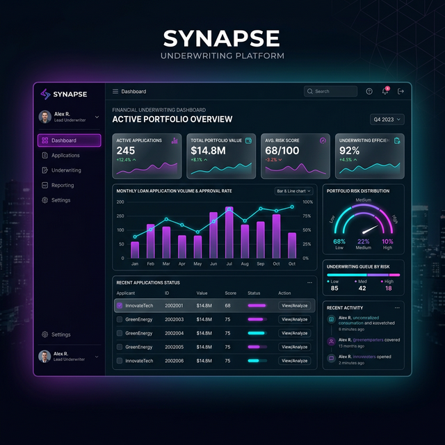

Underwriting Platform
A modern underwriting workspace designed to eliminate repetitive manual checks, accelerate risk evaluation, and give insurers cleaner data visibility through a structured, scalable UI system.
Driving Digital Transformation in Insurance
As the Lead Product Designer, I spearheaded the transformation of a fragmented, manual underwriting process into a unified, data-driven workspace. By aligning stakeholders across three continents, we built a system that scaled from a local pilot to a global enterprise standard, delivering quantifiable gains in risk assessment accuracy and operational velocity.
Key Result
45% Time Savings
Average reduction in policy processing time across all global regions within 6 months of launch.

Aligning Design with Business Strategy
The primary challenge wasn't just UI—it was process. I led stakeholder workshops to map the complex underwriting lifecycle and identify where manual friction created the most risk. My strategy shifted the platform from a "data entry tool" to a "decision intelligence engine," focusing on high-impact automation and clear risk signaling.
Stakeholder Alignment
Bridged the gap between business requirements and technical constraints by facilitating cross-functional design sprints with global leads.
Design Governance
Established a modular design system that ensured consistency across future modules while allowing for regional regulatory variations.
Outcome Management
Defined and tracked success metrics (TAT, Adoption, Error Rates) to iteratively improve the platform post-MVP.
Architecting the Workspace
Unified Dashboard Design
We moved away from isolated tools and designed a centralized, intelligent underwriting workspace. By creating modular risk dashboards, intuitive task queues, and integrated communication tools, we aimed to significantly reduce cognitive load. Wireframes focused on data hierarchy, ensuring critical risk indicators were immediately visible upon logging in.
Design System & UI
Developed a scalable, dark-mode design system. The dark theme was chosen specifically to minimize eye strain for underwriters staring at complex data tables for 8+ hours a day. We used neon accents to draw attention solely to high-risk alerts and required actions, creating a calming yet highly functional visual hierarchy.
The Challenge
Underwriters were previously overwhelmed by scattered data sources and unstructured email communication. Evaluating a single policy risk involved parsing dozens of PDFs, calculating premiums manually, and sending back-and-forth emails. This resulted in a high risk of errors, cognitive overload, and a slow turnaround time.
The Solution
We built a centralized, intelligent underwriting workspace that automatically structured incoming risk data. By designing clear risk dashboards, intuitive task queues, and integrated communication tools, we reduced cognitive load and allowed underwriters to make faster, more confident decisions directly within the platform.


Measurable Success
The launch of the new underwriting platform transformed the department's operations. By directly addressing the user pain points discovered during research, we achieved significant improvements in both efficiency and user satisfaction.
Next Project
Healthcare App
Ready to scale your product experience?
If you are looking for a design leader to solve complex workflows, build scalable systems, and drive real business impact, I would love to connect.